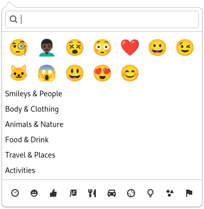

Gtk.EmojiChooser¶
Example¶
- Subclasses
None
Methods¶
- Inherited
Gtk.Popover (21), Gtk.Widget (180), GObject.Object (37), Gtk.Accessible (15), Gtk.Buildable (1), Gtk.Native (6)
- Structs
class |
|
Virtual Methods¶
Properties¶
- Inherited
Signals¶
- Inherited
Name |
Short Description |
|---|---|
Emitted when the user selects an Emoji. |
Fields¶
- Inherited
Class Details¶
- class Gtk.EmojiChooser(**kwargs)¶
- Bases
- Abstract
No
- Structure
The
GtkEmojiChooseris used by text widgets such asGtkEntryorGtkTextViewto let users insert Emoji characters.An example
Gtk.EmojiChooserGtkEmojiChooseremits the [signal`Gtk`.EmojiChooser::emoji-picked] signal when an Emoji is selected.- CSS nodes
`` popover ├── box.emoji-searchbar │ ╰── entry.search ╰── box.emoji-toolbar
├── button.image-button.emoji-section ├── … ╰── button.image-button.emoji-section
Every
GtkEmojiChooserconsists of a main node called popover. The contents of the popover are largely implementation defined and supposed to inherit general styles. The top searchbar used to search emoji and gets the .emoji-searchbar style class itself. The bottom toolbar used to switch between different emoji categories consists of buttons with the .emoji-section style class and gets the .emoji-toolbar style class itself.
Signal Details¶
- Gtk.EmojiChooser.signals.emoji_picked(emoji_chooser, text)¶
- Signal Name
emoji-picked- Flags
- Parameters
emoji_chooser (
Gtk.EmojiChooser) – The object which received the signaltext (
str) – the Unicode sequence for the picked Emoji, in UTF-8
Emitted when the user selects an Emoji.